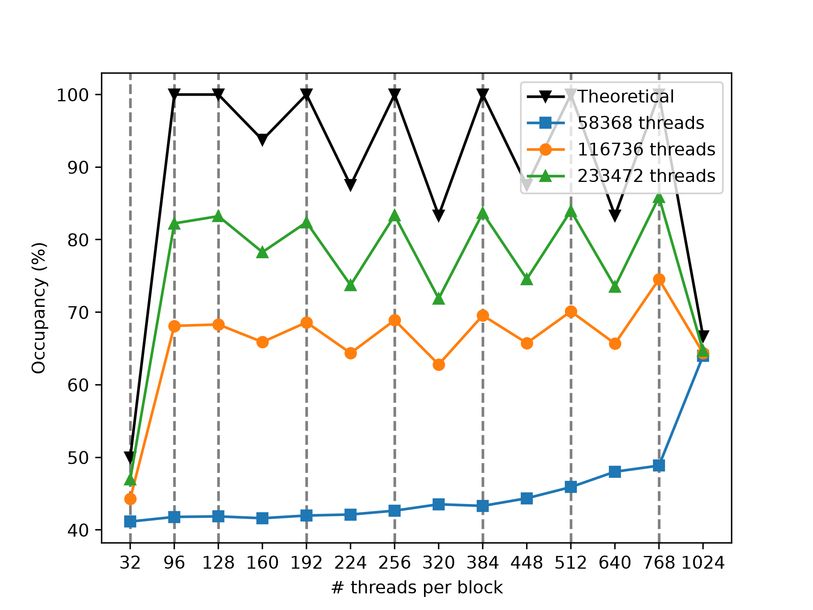
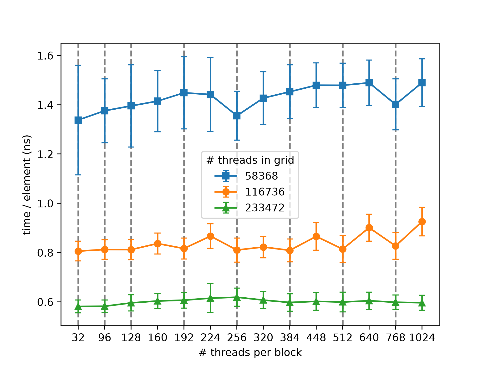

Occupancy实验¶
说明，本实验需要使用ncu，CloudStudio无法使用。
1. 基本概念回顾¶
1.1 实验硬件参数¶
我们看一下本次实验使用的硬件 RTX 4090 Latptop 的主要参数。为了对比，也列举了A100 40GB的参数。
| 参数 | RTX 4090 Laptop | A100 |
|---|---|---|
| SM count | 76 | 108 |
| CUDA cores per SM | 128 | 64 |
| Total CUDA cores | 9728 | 6912 |
| FP64 per SM | 2 | 32 |
| Tensor cores per SM | 4 | 4 |
| VRAM size | 16 GB | 40 GB |
| L2 cache size | 64 MB | 41 MB |
| L1 cache size per SM | 128 KB | 192 KB |
| Base clock frequency | 930–1620 MHz | 1095 MHz |
说明：
- RTX 4090 Laptop 的核心频率会随笔记本厂商设定的功耗（TGP）变化，因此 Base clock 并非固定值；表中给出的是常见规格范围。NanoReview.net
- 我使用的这笔记本的GPU最大时钟频率是：1815 MHz(可以用deviceQuery查看)
1.2 占用率¶
占用率（Occupancy）衡量了流式多处理器（SM）的利用效率，定义为活动线程束（active warps）数量与每个 SM 最大可能线程束数量的比率。SM 中可处于活动状态的最大线程束数量取决于 GPU 架构，可以在官方 CUDA 编程指南 中找到。
例如，采用阿达·洛芙莱斯（Ada Lovelace）架构、计算能力为 8.9 的 RTX 4090 Laptop 每个多处理器最多支持 48 个线程束或 1,536 个活动线程，整个设备（拥有 76 个 SM）则支持 3,648 个线程束和 116,736 个线程。请注意，最大线程数比设备上的 CUDA 核心数高一个数量级。活动线程数多于核心数的原因是为了隐藏延迟。
GPU 通过最大化吞吐量来实现延迟隐藏。让我们来详细分解一下。单个算术指令的完成可能需要几个到几十个时钟周期。这意味着在线程束发出算术指令后，它会进入停顿并等待。幸运的是，CUDA 核心不必闲置，因为线程束调度器（warp scheduler）可以切换到另一个线程束。线程束切换非常快，通常小于 2 个时钟周期。如果有足够多的活动线程束供调度器在其中循环切换，核心就可以被充分利用（即它们每个时钟周期都执行一次操作）。由于指令延迟，执行单个线程束的时间很慢。但是，GPU 通过并发执行多个线程束，确保每个时钟周期都有工作要做。
隐藏所有延迟所需的最小线程数可以按如下方式计算：核心数 \times 指令延迟。如果有一个核心和一个具有 5 个周期延迟的操作，队列中必须始终有至少 5 个活动线程，以确保核心在每个时钟周期都有事情可做。如果有多个核心，该队列大小必须乘以核心数。
例如，RTX 4090 Laptop 上的一个 SM 需要 128 \text{ 个核心} \times 5 \text{ 周期/操作} = 640 \text{ 个活动线程} 或 20 个活动线程束来进行基本的 F32 算术指令运算。为了使整个设备保持忙碌，这些值需要乘以 76（RTX 4090 笔记本电脑 GPU 拥有 76 个 SM），即整个设备需要 48,640 个活动线程或 1,520 个线程束。该设备支持的线程束数量是这个数字的两倍多，但许多操作需要更多的每操作周期数，因此需要更多的活动线程来隐藏所有延迟。以达到最大占用率为目标是很好的。然而，如果指令延迟已经被充分隐藏，更高的占用率将不会提升性能。
理论占用率可以根据内核（kernel）启动配置计算得出。或者，可以使用期望的占用率来决定一个好的内核启动配置。为此，另一个限制因素变得非常重要：可以驻留在 SM 上的最大块（block）数。对于 RTX 4090 Laptop（Ada 架构），这个限制同样是 16。如果使用 32 个线程（1 个线程束）的块大小，则只能在 SM 上调度 16 \times 32 = 512 个线程，因此最大理论占用率为 512 / 1,536 = 33.3\%。对于该设备，大小为 1,536 / 16 = 96 个线程的块是实现 100% 占用率所需的最小块。为了占满整个设备，至少需要一个包含 116,736 / 96 = 1,216 个块的网格（grid）。
为了最大化理论占用率，块大小应该是每个 SM 最大线程数的约数。例如，如果选择 1,024 个线程的块大小（最大尺寸），则每个 SM 在任何给定时间只能有一个活跃的块，使用此网格的最大理论占用率仅为 1,024 / 1,536 = 66.6\%。
在实验考虑对占用率的其他限制因素：寄存器和共享内存的需求。每个 SM 上的寄存器数量和共享内存量是有限的，而块根据内核的不同需要固定数量的这些资源。只有当有足够的这些资源可用时，块才能被调度到 SM 上。
SM 限制并不限制网格大小
本实验仅关注驻留在流式多处理器（SM）上的块（block）和线程的数量。一个网格（grid）可以大得多，多余的块会被排队等待在 SM 上执行。一旦分配给某个 SM，该块就会被划分为线程束（warps），由线程束调度器进行调度。
2. 一个简单的核函数¶
我们的核函数使用正弦函数的泰勒级数展开式的前 10 项来计算输入数组的正弦值，如果忘了什么是泰勒级数也没有关系，因为我们的目标只是实验不同的启动配置(gridDim和blockDim)对于占用率的影响。
2.1 正弦函数的泰勒级数（麦克劳林级数）¶
数学上，正弦函数 \sin(x) 在 x=0 处的泰勒级数（即麦克劳林级数）展开式为：
我们使用了该级数的 前 10 项 进行多项式逼近。可以将每一项通式写为：
- 第 0 项 (n=0)：x （代码中的初始
value） - 第 1 项 (n=1)：-\frac{x^3}{3!}
- 第 2 项 (n=2)：+\frac{x^5}{5!}
- 以此类推……
2.2 代码逐行解析¶
@cuda.jit
def sine_series(x, y) -> None:
# 1. 计算当前线程的全局一维索引
t_id = cuda.grid(1)
# 2. 边界检查，防止越界
if t_id >= y.size:
return
# 3. 获取当前线程负责计算的输入元素 x_i
x_i = x[t_id]
# 4. 初始化第 0 项 (n = 0)
value = x_i # 当前累加的和，初始为 x
x_squared = x_i * x_i # 计算 x^2，方便后续递推累乘
numerator = x_i * x_squared # 分子初始化为 x^3 (即 x * x^2)
sign = -1 # 符号位，从第 1 项开始为负号 (-1)^1
exponent = 3 # 当前项的指数幂 (2n+1)，从 3 开始
denominator = 6 # 分母初始化为 3! = 6
# 5. 循环计算后续的 10 项 (对应代码中的 range(10))
for _ in range(10):
# 累加当前项: value = value + (-1)^n * (numerator / denominator)
value += sign * numerator / denominator
# 递推计算下一项的分子：乘以 x^2 (例如 x^3 * x^2 = x^5)
numerator *= x_squared
# 指数递增 2 (例如 3 -> 5 -> 7 ...)
exponent += 2
# 递推计算下一项的分母：乘以新指数的阶乘增量 (exponent-1) * exponent
# 例如从 3! 变到 5!：denominator *= 4 * 5
denominator *= (exponent - 1) * exponent
# 符号交替取反 (+ -> - -> + -> -)
sign *= -1
# 6. 将最终计算结果写入输出数组
y[t_id] = value
2.3 代码的亮点¶
- 并行计算：
t_id = cuda.grid(1)使得 GPU 上的成千上万个线程可以同时启动，每个线程独立负责数组 x 中一个元素的正弦值计算，极大地加速了大规模数据的计算过程。 - 高效的递推设计：在循环内部，代码并没有每次都去调用昂贵的幂函数 (
pow) 或阶乘函数，而是通过 迭代递推 的方式更新：- 分子每次自乘一个 x^2（\text{numerator} \times= x^2）
- 分母利用上一轮的分母乘以最后两个因式（\times (2n) \times (2n+1)）
3. 实验步骤¶
3.1 用ncu抓取GPU计数器并保存到csv文件¶
在网格中，每个线程处理一个 \sin(x) 函数的求值。我们针对三种不同的问题规模对该内核进行了测试：
- 设备总线程容量的一半（RTX 4090 Laptop 为 58,368）
- 等于设备的总线程容量（RTX 4090 Laptop 为 116,736）
- 设备总线程容量的两倍（RTX 4090 Laptop 为 233,472）
对于其中的每一种问题规模，内核都会在不同的块大小（block size）下运行。这些块大小全都是 32 的倍数。
测试完整代码在numba-cuda-lab/occupancy_script.py，下面是启动测试代码：
configurations = [
32,
96,
128,
160, # no div
192,
224, # no div
256,
320, # no div
384,
448, # no div
512,
640, # no div
768,
1024, # no div
]
grid_shapes = [116736 // 2, 116736, 116736 * 2]
for grid_shape in grid_shapes:
for tpb in configurations:
blocks = (grid_shape + tpb - 1) // tpb
size = grid_shape
x = np.linspace(-2*np.pi, 2*np.pi, num=size, dtype=np.float32)
x_dev = cuda.to_device(x)
y_dev = cuda.device_array(size, dtype=np.float32)
print("blocks", blocks, "tpb", tpb)
sine_series[blocks, tpb](x_dev, y_dev)
cuda.synchronize()
我们用ncu进行分析：
ncu --section Occupancy --csv --log-file results.csv python occupancy_script.py
我们把它输出成csv格式，是为了便于后续用代码分析它。
3.2 用jupyter lab分析结果¶
执行jupyter lab，打开occupancy.ipynb。
3.2.1 读取csv文件并分组统计¶
ncu输出的csv文件内容如下(去掉了冗长的核函数名字，便于显示)：
"ID","Process ID","Process Name","Host Name","Kernel Name","Context","Stream","Block Size","Grid Size","Device","CC","Section Name","Metric Name","Metric Unit","Metric Value","Rule Name","Rule Type","Rule Description","Estimated Speedup Type","Estimated Speedup"
"1","38041","python3.13","127.0.0.1","sine_series....","1","7","(32, 1, 1)","(1824, 1, 1)","0","8.9","Occupancy","Block Limit SM","block","24",
"1","38041","python3.13","127.0.0.1","sine_series....","1","7","(32, 1, 1)","(1824, 1, 1)","0","8.9","Occupancy","Block Limit Registers","block","48",
"1","38041","python3.13","127.0.0.1","sine_series....","1","7","(32, 1, 1)","(1824, 1, 1)","0","8.9","Occupancy","Block Limit Shared Mem","block","32",
"1","38041","python3.13","127.0.0.1","sine_series....","1","7","(32, 1, 1)","(1824, 1, 1)","0","8.9","Occupancy","Block Limit Warps","block","48",
"1","38041","python3.13","127.0.0.1","sine_series....","1","7","(32, 1, 1)","(1824, 1, 1)","0","8.9","Occupancy","Theoretical Active Warps per SM","warp","24",
"1","38041","python3.13","127.0.0.1","sine_series....","1","7","(32, 1, 1)","(1824, 1, 1)","0","8.9","Occupancy","Theoretical Occupancy","%","50",
"1","38041","python3.13","127.0.0.1","sine_series....","1","7","(32, 1, 1)","(1824, 1, 1)","0","8.9","Occupancy","Achieved Occupancy","%","41.15",
"1","38041","python3.13","127.0.0.1","sine_series....","1","7","(32, 1, 1)","(1824, 1, 1)","0","8.9","Occupancy","Achieved Active Warps Per SM","warp","19.75",
"1","38041","python3.13","127.0.0.1","sine_series....","1","7","(32, 1, 1)","(1824, 1, 1)","0","8.9","Occupancy","","","","TheoreticalOccupancy","OPT","The 6.00 theoretical warps per scheduler this kernel can issue according to its occupancy are below the hardware maximum of 12. This kernel's theoretical occupancy (50.0%) is limited by the number of blocks that can fit on the SM.","local","50"
可以看到一个配置(比如上面的blockDim.x=32, gridDim.x=1824)被记录为多行，每一行的关键是Metric Name、Metric Unit和Metric Value。
结合你给出的 ncu（Nsight Compute）输出结果，针对当前配置（Block Size = 32, Grid Size = 1824, CC 8.9 架构），其余各项指标的完整解释如下：
3.2.1.1. 资源限制维度的 Block 上限¶
这几行指标展示了 如果仅由某单一硬件资源决定，每个 SM 最多能同时容纳多少个该尺寸的 Block：
Block Limit SM=24：- 解释：受 SM 硬件架构本身的 Block 数量上限 限制（例如在某些架构上，每个 SM 最多只能同时调度 16 或 24 个活跃 Block），每个 SM 最多容纳 24 个 Block。
Block Limit Registers=48：- 解释：受 寄存器（Registers）数量 限制。由于该内核中每个线程消耗的寄存器较少，计算下来每个 SM 最多可容纳 48 个 Block。
Block Limit Shared Mem=32：- 解释：受 共享内存（Shared Memory）大小 限制。由于该内核申请的共享内存大小，使得每个 SM 最多可容纳 32 个 Block。
Block Limit Warps=48：- 解释：受 线程束（Warps）总数 限制。Ada Lovelace 架构（CC 8.9）每个 SM 最大支持 48 个 Warp（1,536 个线程）。因为 Block 大小是 32 个线程（正好 1 个 Warp），所以 48 \text{ warps} / 1 \text{ warp per block} = 48 个 Block。
3.2.1.2. 理论与实际占用率指标¶
在上述所有限制中，木桶效应的最短板（即最小值）决定了最终的理论上限：
- 上述限制的最小值是
Block Limit SM= 24（以及 Shared Mem 的 32 等，具体瓶颈由最小值决定）。因此，每个 SM 理论上最多只能同时激活 24 个 Block。 Theoretical Active Warps per SM=24：- 解释：理论每 SM 活动线程束数。由于受限最大只能跑 24 个 Block，每个 Block 含有 1 个 Warp（32线程），因此每个 SM 理论上最多有 24 个活跃 Warp。
Theoretical Occupancy=50%：- 解释：理论占用率。计算方式为：\text{理论活动 Warp 数 (24)} \div \text{SM 最大支持 Warp 数 (48)} = 50\%。
Achieved Occupancy=41.15%：- 解释：实际达成占用率。内核在 GPU 实际运行期间，由于启动阶段、尾块（Tail Effect，即网格任务快结束时部分 SM 空闲）或调度延迟等综合因素，平均每个 SM 实际达到的资源占用率是 41.15%。
Achieved Active Warps Per SM=19.75：- 解释：实际每 SM 平均活动线程束数。对应实际达成占用率下的平均 Warp 数量（48 \times 41.15\% \approx 19.75 个 Warp）。
3.2.1.3 用代码来读取统计¶
我们主要关心的指标是Theoretical Occupancy和Achieved Occupancy，所以我们用pandas来提取数据：
import pandas as pd
import ast
profile_results = pd.read_csv("results.csv", sep=",", header=2)
profile_results["tpb"] = profile_results["Block Size"].apply(lambda x: ast.literal_eval(x)[0])
profile_results["bpg"] = profile_results["Grid Size"].apply(lambda x: ast.literal_eval(x)[0])
profile_results["size"] = profile_results["tpb"] * profile_results["bpg"]
profile_results = profile_results[profile_results["size"] > 100]
profile_results["size_class"] = (profile_results["size"] // 58368).astype(int)
profile_results["is_divisor_of_1536"] = (1536 % profile_results["tpb"]) == 0
theoretical = profile_results[profile_results["Metric Name"] == "Theoretical Occupancy"]
achieved = profile_results[profile_results["Metric Name"] == "Achieved Occupancy"]
split_theoretical = {x: y for x, y in theoretical.groupby("size_class")}
split_achieved = {x: y for x, y in achieved.groupby("size_class")}
代码不做解释，因为它不是我们主要的关注点，不熟悉pandas的同学可以让大模型解释代码。这里补充几点主要事项：
- 我们在正式跑之前会有一次warmup，使用的线程数(
size)很小，所以统计时去掉它：profile_results[profile_results["size"] > 100]
is_divisor_of_1536: 我们的线程块的线程数量是否能被1536整除
补充：关于代码，如果你在其它不同类型的机器上跑实验，注意几个 硬编码 的与GPU型号相关的参数：
1536: SM的最大线程数58368: GPU总线程数的一半(76*1536/2)
3.2.2 画图¶
# hidden
import matplotlib.pyplot as plt
import numpy as np
fig, ax = plt.subplots()
# all the same
df_s = split_theoretical[1]
x = np.arange(len(df_s))
ax.plot(x, df_s["Metric Value"], label=f"Theoretical", marker="v", color="black")
labels = df_s["tpb"]
for (size, df_s), marker in zip(split_achieved.items(), ["s", "o", "^"]):
x = np.arange(len(df_s))
ax.plot(x, df_s["Metric Value"], label=f"{size * 58368} threads", marker=marker)
labels = df_s["tpb"]
ax.legend()
ax.set_xlabel("# threads per block")
ax.set_ylabel("Occupancy (%)")
# Set tick positions and initial labels
ax.set_xticks(x)
ax.set_xticklabels(labels)
for i, is_div in enumerate(df_s["is_divisor_of_1536"]):
if is_div:
ax.axvline(i, 0, 100, color="grey", zorder=-100, ls="--")
fig.savefig("profiling_occupancy.png", dpi=320)

3.2.3 结果分析¶
上图展示了所有的结果。x 轴表示每个块中的线程数；y 轴表示线程束占用率。图中有四条不同的曲线：每种问题规模对应一条，还有一条表示理论最大占用率。理论最大占用率并未考虑问题规模，而只考虑每个块的线程数。如果没有违反其他限制条件（例如寄存器、共享内存），这些块大小可以实现 100% 的占用率。在块大小是每个 SM 最大线程数的约数的位置处绘制了垂直虚线。
正如预期的那样，只有当块大小能够整除每个 SM 的最大线程数时，理论占用率才是 100%。在任何其他情况下，最大块数都小于 SM 的容量。块大小为 32 和 1,024 线程时的数值与之前手算的结果相符。
然而，实际测得的占用率始终低于理论极限。对于大到足以完全占满 GPU 的问题规模，其趋势与理论曲线一致。当问题规模太小而无法使 GPU 饱和时，网格配置对测得的占用率影响微乎其微，因为所有 SM 都留有未使用的容量。随着问题规模的增大，测得的占用率也会提升，因为更大的问题规模减小了块调度以及跨 SM 负载均衡的相对开销。
3.3 时间对比¶
前面我们看到了不同启动配置对于占用率的影响，那么实际的运行时间呢？我们再做一个实验。
3.3.1 执行代码¶
完整代码在numba-cuda-lab/occupancy_time.py，下面是主要代码：
block_factors = [0.5, 1, 2]
trials = 1000 # number of data points collected
repetitions = 100 # number of times we run it to time a single trial
results = []
size = 32
x = np.linspace(-2*np.pi, 2*np.pi, size, dtype=np.float32)
x_dev = cuda.to_device(x)
y_dev = cuda.device_array(size, dtype=np.float32)
sine_series[1, size](x_dev, y_dev)
cuda.synchronize()
grid_shapes = [116736 // 2, 116736, 116736 * 2]
for grid_shape in grid_shapes:
for tpb in configurations:
blocks = (grid_shape + tpb - 1) // tpb
size = grid_shape
blocks = size // tpb
measurements = []
for _ in range(trials):
x = np.linspace(-2*np.pi, 2*np.pi, size, dtype=np.float32)
x_dev = cuda.to_device(x)
y_dev = cuda.device_array(size, dtype=np.float32)
start = time.perf_counter()
for _ in range(repetitions):
sine_series[blocks, tpb](x_dev, y_dev)
cuda.synchronize()
stop = time.perf_counter()
measurements.append((stop - start) / repetitions)
mean = np.mean(measurements)
std = np.std(measurements)
results.append([blocks, tpb, size, mean, std])
print(blocks, "blocks, ", "tpb = ", tpb, "size = ", size, " : ", np.round(mean * 1e9 / size, 3), "+/-", np.round(std * 1e9 / size, 3), "ns / element")
df_time = pd.DataFrame(results, columns = ["blocks", "tpb", "size", "mean", "std"])
df_time.to_csv("timing_results.csv")
代码不做解释，我们执行它：
python occupancy_time.py
结果输出到timing_results.csv，我们还是在jupyter lab里画图分析
3.3.2 画图¶
df_time = pd.read_csv("timing_results.csv")
import matplotlib.pyplot as plt
dfs_time = {x: y for x, y in df_time.groupby('size')}
fig, ax = plt.subplots()
for (size, df_s_time), marker in zip(dfs_time.items(), ["s", "o", "^"]):
factor = 1e9 / size
x = np.arange(len(df_s_time))
ax.errorbar(x, df_s_time["mean"] * factor, yerr=df_s_time["std"] * factor, label=f"{size}", marker=marker, capsize=3)
labels = df_s_time["tpb"]
ax.legend(title="# threads in grid")
ax.set_xlabel("# threads per block")
ax.set_ylabel("time / element (ns)")
for i, label in enumerate(labels):
if 1536 % label == 0:
ax.axvline(i, 0, 100, color="grey", zorder=-100, ls="--")
# Set tick positions and initial labels
ax.set_xticks(x)
ax.set_xticklabels(labels)
fig.savefig("timing_occupancy.png", dpi=320)

3.3.3 结果分析¶
上图展示了所有配置下每个输出元素的平均运行时间（内核运行时间除以问题规模）。内核被执行了 100,000 次以确保统计显著性，误差条表示多次运行中的一个标准差。
随着问题规模的增大，计算效率提高：每个输出元素所需的运行时间减少。这反映了对 GPU 资源的更好利用，因为固定开销（例如内核启动、内存传输）被分摊到了更多的工作量上，并且设备的计算单元保持了更高的繁忙度。
对于较小的问题规模，块大小对测得的占用率影响微乎其微，但最佳性能与实现 100% 理论占用率的配置相吻合。这很可能是由于各 SM 之间的工作负载分配更加均衡，从而最小化了空闲时间并最大化了活动线程束。
然而，随着问题规模的增长，占用率与性能之间的联系减弱了。这表明占用率已经足够高以隐藏延迟，而其他瓶颈（例如设备的计算能力）开始占主导地位。在此内核中，性能受到 GPU 执行算术运算能力的限制，而不是受其调度线程束能力的限制。